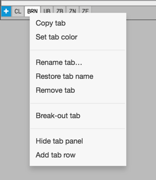
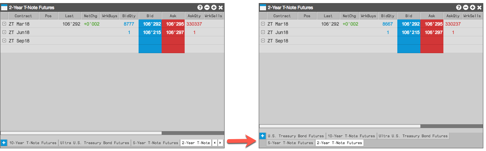
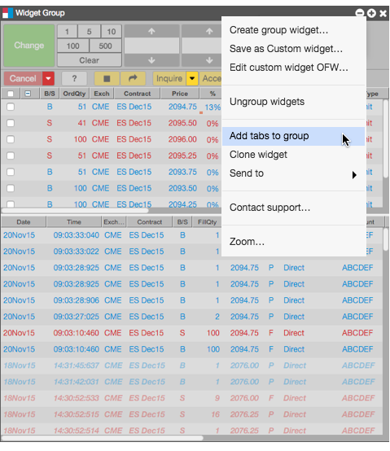
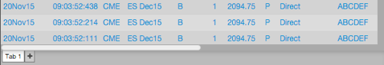
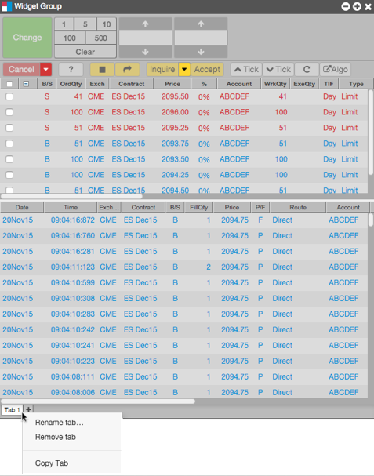
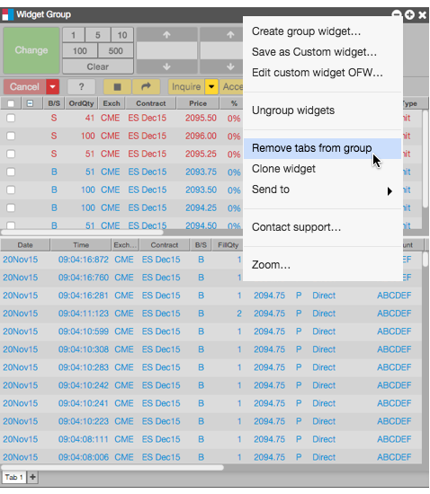

You can move, rename, copy, and remove tabs from widgets that support tabs from the tab context menu.

- To reorder the tabs, drag a tab to its new position. If you drag the tab away from the widget, a new widget is added to the desktop populated with the contents of the tab.
- To set a color for a tab, select Set tab color from the tab's context menu.
- To rename a tab, select Rename tab from the tab's context menu, and specify the new name.
- To restore a tab's name to its original value, select Restore tab from the context menu.
- To copy a tab, select Copy tab from the context menu.
- To remove a tab, select Remove tab from the context menu.
-
To add another row to the tab panel, select Add tab row from the context menu. Adding a row, moves the tabs hidden in the scrolling view to the next row.

- To remove a manually added tab row, select Remove tab row from the context menu, which removes the bottom-most row.
- To hide the tab panel, select Hide tab panel from the context menu. Once hidden, you need to enable Show tabs in the Settings to show the panel.
Showing tabs in a widget group
Tip: Hide the tabs in each widget in the widget group before showing tabs for the whole group. To hide tabs in each widget, right-click in the widget to display the context menu and uncheck (disable) the Show tabs setting.
-
Right-click in the title bar of the widget group and select Add tabs to group.

The tab appears at the bottom of the widget group.

-
Right-click the widget group tab to rename, remove, or copy the tab as needed.

-
To add and configure additional tabs for the group, click the + next to the widget group tab.
Hiding tabs in a widget group
Right-click in the title bar of the widget group and select
Remove tabs from group. When selected, this option hides all tabs at the bottom of the
widget group.

Widget tab colors
{% include tab-colors.html %}